Donuts: Graph DSL for Common Lisp
日本語/English(under translation)
Table of Contents
{kind=link}
1 Introduction
*Donuts is graph DSL (or Graphviz interface) for Common Lisp.* Donuts convertes a graph that represented by S-expressions to a code of dot language, and output an image to the viewer. Because you can use all power of Lisp (REPL, macros, functions, CLOS, multi-paradigm style, etc.), you can easily draw a complex graph (cf. Small Programs).
How to use donuts is easy.
<> creates a node.
-> puts an edge between two nodes.
&& makes a graph by bundling together some nodes, edges and graphs.
$$ outputs an image of the graph.
If you enter code at the bottom left into a Lisp REPL, bottom right image is output to viewer.
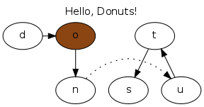
($$ (let ((o (<> "o" :style :filled :fillcolor :chocolate4))) ;Make chocolate donut (& (:label "Hello, Donuts!" :labelloc t :size "3,3") ;Make graph (--> "d" o "n") ;Put edges through nodes (-> "n" "u" :style :dotted) ;Put doted edge between 2 nodes (--> "u" "t" "s") ;Put edges through nodes (~ "d" o "t") (~ "n" "u")))) ;Arrange nodes
In order to draw a graph by Donuts, immediately.
Donuts is distributed under the MIT license. So, you can basically do with it whatever you want. For the exact wording of the license, please check the header of the source code.
Current version is 0.3.1. Donuts is a beta version at present.
Donuts has practical operators.
2 Installation
2.1 Chacked Operational Environments
2.1.1 OS
- linux-2.6.32-5-686
2.1.2 Common Lisp Implementation
- sbcl-1.0.55
- ccl-1.7-r14925M(LinuxX8632)
2.2 Dependencies
2.2.1 Outer Systems
- Graphviz by AT&T Labs
- Appropriate viewer
2.2.2 Common Lisp Library
- cl-ppcre by Dr. Edmund Weitz
- trivial-shell by Gary Warren King
2.3 Download & Install
2.3.1 Automatic download & install by quicklisp
Since May 21, 2012, you are registered for the quicklisp library. Type and that (:: quickload donuts ql), will be downloaded and installed automatically on the REPL.
2.3.2 Manual download & install
The current development version can be downloaded from https://github.com/tkych/donuts. Place the path that is registered in the * central-registry *, in REPL: asdf, the donuts and type the directory where you downloaded that (asdf: operate 'asdf:: load-op donuts), will be installed.
2.4 Chack
CL-USER> (in-package :donuts) DONUTS> (dot-output (&& (-> 1 2))) ;OK dot code like the following appears on the standard output次のようなdotコードが標準出力に表示されたらOK ; digraph graph_ID_103 { ; 1 -> 2; ; } DONUTS> ($$ (&& (-> 1 2))) ;OK to start the viewer, the image below output when you areビューアが起動し、下の画像が出力されたらOK
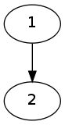
3 Idea of Donuts — <>, ->, &
3.1 The Goal of Donuts
Man's thought is shaped by his tongue
— J.L.Bentley, More Programming Pearls1, p.15.
The goal of donuts is to draw graph in Lisp problem-solving methods.
Lisp ：
CL-USER> (princ "Hello World") Hello World "Hello World"
Java ：
// in HelloWorld.java public class HelloWorld { public static void main(String args[]) { System.out.println("Hello World"); } } // in shell $ javac HelloWorld.java // compile HelloWorld.java $ java HelloWorld // execute HelloWorld Hello World // output 'Hello World' in standard output
3.2 Lodestar
When you work bottom-up, you usually end up with a different program.
Instead of a single, monolithic program, you will get a larger language with more abstract operators,
and a smaller program written in it.
…
Lisp is an especially good language for writing extensible programs because it is itself an extensible program.
If you write your Lisp programs so as to pass this extensibility on to the user,
you effectively get an extension language for free.
— Paul Graham, On Lisp ,pp.4–5.
3.3 Abstruction of "Create Graphes" — User Interface1
The contrast between function and procedure is
a reflection of the general distinction between describing properties of things and describing how to do things,
or, as it is sometimes referred to, the distinction between declarative knowledge and imperative knowledge.
In mathematics we are usually concerned with declarative (what is) descriptions,
whereas in computer science we are usually concerned with imperative (how to) descriptions.
— Harold Abelson and Gerald J. Sussman, with Julie Sussman, SICP ,section 1.1.7.
3.4 Pictorial name of functions and macros — User Interface2
| Constructors | Operators | Utilities | |
|---|---|---|---|
| Graphes | &, [&] | with-graph, && | |
| Edges | ->, –– | with-edge, ––>, ->>, ==>, ?, -<, –––, O | |
| Nodes | <>, [] | @, rank | with-node, ~ |
| Miscellaneous | dot-output, $ | dot-pprint, $$ |
4 Tutorial
Using Donuts:
- Generate a node node constructor in
<>.(<> Label)==> node - Edge constructor - connecting the two nodes in the>.
(-> Node1 node2)==> edge - To generate graphs and charts bundle is a graph node and edge && constructor.
(&& . Nodes-edges-graphs)==> graph - Output to the viewer a graph with a shell interface
$$$. Output the image to the viewer;($$ graph)==> NIL - Dot code to display the standard output of the graph in dot-output. dot code to display the standard output; (dot-output graph) => NIL
4.1 Simple Graphes
(& () (-> (<> "Hello") (<> "World")))
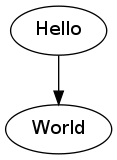
(& () (-> "Hello" "World"))
(setf h (& () (-> "Hello" "World"))) (& () h (-> "こんにちは" "World"))
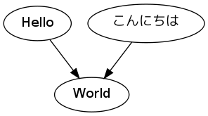
4.2 Attributes
1: (& (:label "Proparty Example") 2: (-> "a" "b" :color :red) 3: (-> "a" (<> "c" :shape :box) :color :blue) 4: (<> "d" :shape :circle))
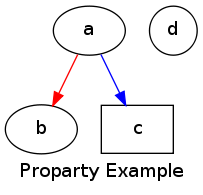
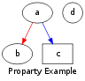
- Node： http://www.graphviz.org/content/attrs
- Node-Shape： http://www.graphviz.org/node-shapes.html
- Edge-Shape： http://www.graphviz.org/arrow-shapes.html
- Color： http://www.graphviz.org/color-names.html
4.3 Labels
(& () (<> "12\\ 34\\n56\\l78\\r\\N\\\\" :shape :note))
4.4 Output
4.4.1 dot-output, dot-pprint
(dot-output (& (:rankdir :LR) (-> (<> "Japan" :shape :house) (<> "Head" :shape :diamond) :label "Go to Diamond Head!")))
digraph graph_T68 { rankdir=LR; node_T65 [label="Japan",shape=house]; node_T66 [label="Head",shape=diamond]; node_T65 -> node_T66 [label="Go to Diamond Head!"]; }
4.4.2 $
($ (:outfile "diamond.png") (& (:rankdir :LR) (-> (<> "Japan" :shape :house) (<> "Head" :shape :diamond) :label "Go to Diamond Head!")))

| Keywords | To specify | Default |
|---|---|---|
| :outfile | image file name to create | "DONUTS-TMP.png" |
| :show | Boot viewer | t |
| :layout | layout algorithims | :dot |
4.5 Subgraphes, Clusteres
(& (:label "BIG" :labelloc t :size "1,1") ;グラフBIGを生成する (& (:label "small" :size "10,10") ;部分グラフsmallを生成する、部分グラフの属性は無効！！ (-> "a" "b")) ;small内でエッジa->bを生成する (-> "A" "B")) ;BIG内でエッジA->Bを生成する
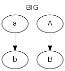
1: (& (:rankdir :LR) 2: ([&] (:label "Here is in the cluster!") ;クラスタは部分グラフだが属性はつねに有効！！ 3: (-> "a" "b") 4: (-> "b" "c")) 5: (-> "Out of the cluster" "c"))
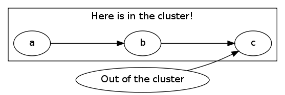
4.6 Rank
| rank-keyword | :same | :min | :max | :source | :sink |
| 指定される配置 | 同じ高さ | 左上 | 右下 | 左上 | 右下 |
1: (& (:size "2,2") 2: (let ((a (<> 0 :color :red)) (b (<> 1 :color :blue)) 3: (c (<> 2 :color :red)) (d (<> 3 :color :blue)) 4: (e (<> 4 :color :red)) (f (<> 5 :color :blue))) 5: (rank :same a c e) (rank :same b d f) 6: (-> a c) (-> c e) (-> b d) (-> d f) (-> a b) (-> c d) (-> e f)))
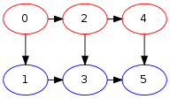
4.7 Ports
| compass-keyword | :n | :ne | :e | :se | :s | :sw | :w | :nw | :c | :_ |
| 方位 | 北 | 北東 | 東 | 南東 | 南 | 南西 | 西 | 北西 |
1: (& (:size "2,2") 2: (-> (@ "a" :s) (@ "b" :n)) 3: (-> (@ "b" :w) "c") 4: (-> (@ "b" :s) "d") 5: (-> (@ "b" :e) "e"))
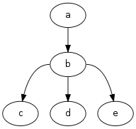
4.8 Records
4.8.1 Fields
(& () (-> "A" ([] "a|b|c")) (-> "A" ([] "d|{1|{e|{2|f|3}|g}|4}|h")))
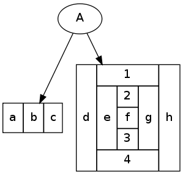
4.8.2 Feild Ports
1: (let ((abc ([] ":a a|:b b|:c c" :shape :Mrecord)) 2: (defgh ([] "d|{1|{e|{:2 2|:f f|:3 3}|g}|4}|h"))) 3: (& () 4: (rank :same abc defgh) 5: (-> "A" (@ abc :b)) 6: (-> "A" (@ defgh :f)) 7: (-> (@ abc :a) (@ abc :c)) 8: (-> (@ defgh :2) (@ defgh :3))))
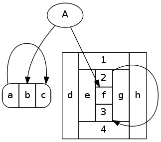
4.9 Utilities
使用しなくともグラフ作成は可能ですが、使用するとグラフ作成が少しだけ楽になるユーティリティ集です。
4.9.1 コンテキストを作り出すもの
注: with-node, with-edgeは、&,[&],&&の内部でのみ、期待通りの動作が保証されます。 with-node, with-edgeは、暗黙の部分グラフを生成します。 そのため、トップレベルでwith-node, with-edgeを使用した場合、コンテキスト内のグラフ属性が無効になってしまいます。 次の上のコードは期待通りに動作しますが、下のコードは期待通りに動作しません。
;; 出力されるグラフにラベルが付く (& (:label "このグラフ属性は有効") ;トップレベルのグラフなので、属性が有効になる (with-node (:color :red) (-> "a" "b"))) ;; 出力されるグラフにはラベルが付かない (with-node (:color :red) (& (:label "このグラフ属性は無効") ;with-nodeによって生成される暗黙の部分グラフの部分グラフなので、属性が無効になる (-> "a" "b")))
with-node, with-edgeは、&,[&],&&の内部でのみ、使用できると考えた方が無難です。
- with-node
1: (& (:rankdir :LR) 2: "a" 3: (with-node (:color :red) 4: (-> "a" "b") 5: (with-node (:shape :box) 6: (-> "b" "c") 7: (with-node (:color :blue) 8: (-> "c" "d") 9: (-> "d" (<> "e" :color :goldenrod :shape :box3d))))))
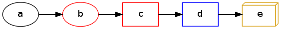
詳しくコード内容を説明します。
2行目、ノードaはデフォルトの属性値を持ったノードとして生成されます。
3行目、ノードの色属性のデフォルト値が赤のコンテキストがwith-nodeによって作り出されます。 これより深いコンテキストで生成されるノードのデフォルト色は赤になります。
4行目、ノードbが生成され、エッジa->bが生成されます。 ノードbの色は赤です。
5行目、ノードの形属性のデフォルトがboxのコンテキストがwith-nodeによって作り出されます。 これより深いコンテキストで生成されるノードは、デフォルトで形がbox、色が赤のものになります。
6行目、色が赤、形がboxのノードcが生成され、エッジb->cが生成されます。
7行目、青がノードの色属性のデフォルトである、コンテキストがwith-nodeによって作り出されます。 これより深いコンテキストで生成されるノードは、デフォルトで形がbox、色が青のものとなります。 ここで、注目してもらいたいことは、 デフォルトの色属性値が、(3行目で指定された)赤から青に上書きされた ということです。
8行目、色が青、形がboxのノードdが生成され、エッジc->dが生成されます。
9行目、色がgoldenrod、形がbox3dのノードeが生成され、エッジd->eが生成されます。 ここで、注目して欲しいことは、 デフォルトの属性値が変更されているコンテキスト内でも、生成するノードの属性値を自由に指定するができる ということです。
以上をまとめると、with-nodeコンテキスト用いる際に注意することは、次の3点です（これらは次に見るwith-edgeでも同様です）。
- 属性のデフォルト値がすべて変更される。
- ネストした場合、デフォルト値が上書きされていく。
- コンテキスト内でも、通常のようにコンストラクタで属性値を指定することができる。
- with-edge
with-edgeの使い方もwith-nodeと同様です。 解説すると冗長になってしまいますので、ここでは例の提示のみにとどめます。
1: (& (:rankdir :LR) 2: (with-edge (:arrowhead :onormal) 3: (-> "a" "b") 4: (with-edge (:color :red) 5: (-> "b" "c") 6: (-> "c" "d" :color :green :arrowhead :dot))) 7: (-> "d" "e")) ;エッジd->eはコンテキスト外
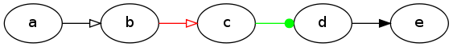
4.9.2 自己ループを生成する関数：?
関数 ? は単一のノードとエッジ属性を引数に取り、自己ループを生成します。
(? (<> 42 :shape :Mcircle) :label " Life, the Universe and Everything")
(dot-output (& () (? (<> 42 :shape :Mcircle) :label " Life, the Universe and Everything")))
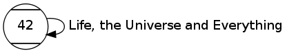
4.9.3 複数のノードを同じ高さに設定する関数：~
~ は、引数に複数のノードを取り、グラフ内でそれらのノードを同じ高さに配置する副作用を行い、NILを返します。
~ の定義は次のものです。
(defun ~ (&rest nodes) (apply #'rank :same nodes))
定義からわかるように、 (~ ****) はランクオペレータ (rank :same ****) と同等の働きをします。
つまり、 ~ はコードの省略のためだけのユーティリティです。
実際にDonutsを使ってみて、ノードの高さを揃える頻度がわりと多いこと、記号 ~ は視覚的にわかりやすいことを鑑み、ユーティリティとして新たに定義することにしました。
4.9.4 複数のノードを数珠つなぎに結ぶ関数：––>
(--> "a" "b" (<> "d" :color :red) "e")
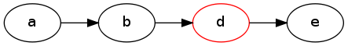
注： 個別にエッジの属性を指定することはできません。
4.9.4 1つのノードから他のノードへ、エッジを放射状に張る関数：->>
->> は、複数のノードを引数に取り、先頭のノードから2番目以降のすべてのノードへのエッジを張る関数です。
(->> "a" "b" (<> "c" :color :goldenrod) (<> "d" :style :filled))
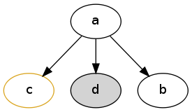
4.9.5 他のノードから1つのノードへ、エッジを収束状に張る関数：==>
==> は、複数のノード（とエッジの属性）を引数に取り、 最後尾のノードへ他のノードから収束状（放射状の逆）のエッジを張る関数です。
(==> "a" "b" (<> "c" :color :goldenrod) (<> "d" :style :filled))
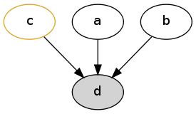
4.10 Undirected Graphes, Layout Algorithms
- :dot
($ (:layout :dot) ;デフォルトは:dotなのであえて指定しなくとも良いが解説のため (& (:rankdir :LR) (O "n0" "n1" "n2" "n3")))

- :neato
($ (:layout :neato) (& (:rankdir :LR) (O "n0" "n1" "n2" "n3")))
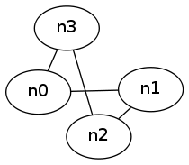
- :twopi
($ (:layout :twopi) (& (:rankdir :LR) (-< "n0" "n1" "n2" "n3")))
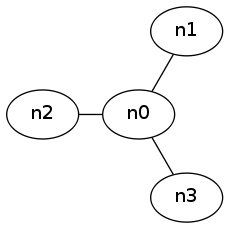
- :circo
($ (:layout :circo) (& (:rankdir :LR) (O "n0" "n1" "n2" "n3")))
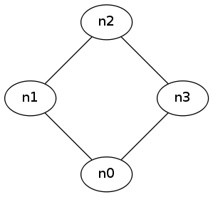
- :fdp
($ (:layout :fdp) (& (:rankdir :LR) (O "n0" "n1" "n2" "n3")))
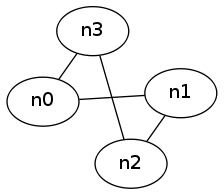
- :sfdp
($ (:layout :sfdp) (& (:rankdir :LR) (O "n0" "n1" "n2" "n3")))
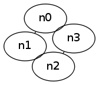
4.11 Utilities2
4.11.1 複数のノードを直線状につなぐ関数：–––
(--- "a" "b" (<> "d" :color :red) "e")
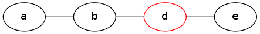
注： 個別にエッジの属性を指定することはできません。
4.11.1 複数のノードを環状につなぐ関数：O
(defun O (&rest nodes) (apply #'--- (conc1 nodes (1st nodes))))
4.11.2 1つのノードを多数のノードとつなぐ関数：-<
-< は、複数のノード（とエッジの属性）を引数に取り、
先頭のノードとそれ以外のすべてのノードとを結んだ部分グラフを生成する関数です。
->> の無向グラフ版です。
(-< "a" "b" (<> "c" :color :goldenrod) (<> "d" :style :filled))
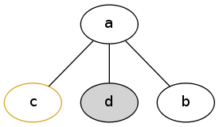
4.12 Html-Like-Labels
1: (&& (<> (html 2: (table :bgcolor :khaki 3: (tr (td "!!WANTED!!" (br) 4: (font :point-size "10" "Dead or Alive") 5: :border 0)) 6: (tr (td :bgcolor :ghostwhite :border 0 7: (img :src "/home/tkych/lisplogo_alien_128.png"))) 8: (tr (td :border 0 "$1,000,000" (br) "REWARD")))) 9: :shape :plaintext))
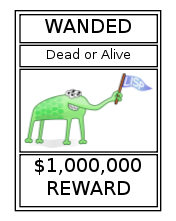
- html-like-labels in Graphviz manual: http://www.graphviz.org/node-shapes.html
- Witness information!!: http://www.lisperati.com/logo.html
4.13 Small Programs — Calendar, Binary-Tree, Cons-Cell, Finite-Automaton
4.13.1 Calendar
Grapvizによってカレンダーを描くという例は、Mihalis Tsoukalos氏によるAn Introduction to GraphVizより拝借しました。 もとの例は、カレンダーを描くためのdotコードファイルを生成するPerlプログラムを書くというものです。
($$ (& (:size "8,6":rankdir :LR) (generate-monthly-calendar 'may 2012 31 2)))
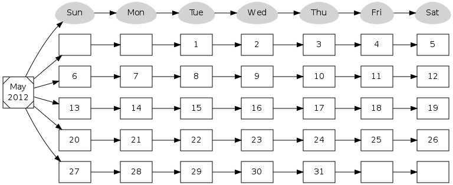
(defun generate-monthly-calendar (month year num-days starting-day) (let ((month (<> (format nil "~@(~A~)\\n~D" month year) :shape :Msquare)) (luminary7 (loop :for day :in '("Sun" "Mon" "Tue" "Wed" "Thu" "Fri" "Sat") :collect (<> day :shape :egg :style :filled :color :lightgray))) (days (loop :for day :in (nconc (loop :repeat starting-day :collect "") (loop :for d :from 1 :to num-days :collect d) (loop :repeat (- (* 7 (if (and (= 28 num-days) (= 0 starting-day)) 4 5)) ;for Feb starting Sun in common year starting-day num-days) :collect "")) :collect (<> day :shape :box)))) (apply #'&& (loop :for week :in (cons luminary7 (group 7 days)) :collect (apply #'--> month week))))) ;; from On Lisp (defun group (n lst) (if (zerop n) (error "zero length")) (labels ((rec (lst acc) (let ((rest (nthcdr n lst))) (if (consp rest) (rec rest (cons (subseq lst 0 n) acc)) (nreverse (cons lst acc)))))) (if lst (rec lst nil) nil)))
関数generate-monthly-calendarは、引数として、月の名前month、年year、 月の日数num-days、1日の曜日starting-dayを取り、 カレンダーを表すグラフを返します。 '1日の曜日'とは、日曜を0、月曜を1、…土曜を6に、それぞれ対応させた数値です。
4.13.2 Binary Tree
($ () (& (:size "6,8") (binary-tree-graph '("a" ("b" ("d" "h" "i") ("e" "j" "k")) ("c" ("f" "l" "m") ("g" "n" "o"))))))
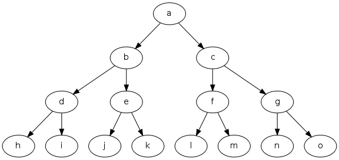
1: (defun binary-tree-graph (tree) 2: (labels ((rec (x) 3: (let ((p (first x)) (lc (second x)) (rc (third x))) 4: (&& (when lc 5: (if (atom lc) 6: (-> p lc) 7: (&& (-> p (car lc)) (rec lc)))) 8: (when rc 9: (if (atom rc) 10: (-> p rc) 11: (&& (-> p (car rc)) (rec rc)))))))) 12: (if (null (cdr tree)) 13: (car tree) 14: (rec tree))))
関数 binary-tree-graph は、(parent left-child right-child)構造のツリーを再帰的に下り2分木グラフを生成します。
3行目、マッチに失敗した場合にエラーが発生するので、letをdestructuring-bindに置き換えることはできません。
12行目、ツリーがルートのみで構成されているかどうかをチェック。
4.13.3 Cons Cell
($ () (& (:size "5,5") (cons-cell-of (a (b c) (d (e f)) g))))
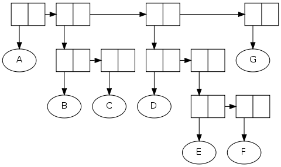
(defmacro cons-cell-of (tree) (labels ((rec (x root-cons nest) (cond ((null x) nil) ((atom x) `(set-car ,root-cons ,(format nil "~S" x))) (t (let* ((name (gensym "CONS-")) (car-struct (rec (car x) name t))) (list 'cons-cell name car-struct (rec (cdr x) name nil) (when root-cons (list (if nest 'set-car 'set-cdr) root-cons name)))))))) (rec tree nil nil))) (defmacro cons-cell (name &body body) `(let ((,name ([] ":car |:cdr"))) (&& ,@(delete nil body)))) (defmacro set-car (cell obj) `(-> (@ ,cell :car) ,(if (stringp obj) obj `(@ ,obj :car :n)))) (defmacro set-cdr (cell obj) `(&& (~ ,cell ,obj) (-> (@ ,cell :e) ,(if (stringp obj) obj `(@ ,obj :w)))))
マクロcons-cell-of2は、ツリーを引数に取り、ツリーのコンスセル構造を描くグラフを生成します。 展開の過程で、いったんツリーをツリー構造を表すコードに変換し、その後、グラフを生成するコードに変換します。
(cons-cell-of (a b)) -> (CONS-CELL #:CONS-1347 ;ツリー構造を表すコード (SET-CAR #:CONS-1347 "A") (CONS-CELL #:CONS-1348 (SET-CAR #:CONS-1348 "B") NIL ;NILはマクロcons-cellの展開時に除かれる (SET-CDR #:CONS-1347 #:CONS-1348)) NIL) -> (LET ((#:CONS-1347 ([] ":car |:cdr"))) ;グラフを生成するコード (&& (-> (@ #:CONS-1347 :CAR) "A") (LET ((#:CONS-1348 ([] ":car |:cdr"))) (&& (-> (@ #:CONS-1348 :CAR) "B") (&& (~ #:CONS-1347 #:CONS-1348) (-> (@ #:CONS-1347 :E) (@ #:CONS-1348 :W)))))))
展開途中のツリーの構造は、cons-cell, set-car, set-cdr等のマクロによって表現されます。 cons-cellは、nameを引数に取り、（レコードで表現された）コンスセルがnameに束縛されているコンテキストを作ります。 set-car（またはset-cdr）は、nameとobjを引数に取り、nameに束縛されたコンスセルのcar（またはcdr）にobjを連結します。
4.13.4 Finite Automaton
($ () (& (:rankdir :LR :size "3,2") (trans-diagram S1 (S2) ((S1 (0 S1) (1 S2)) (S2 (0 S3) (1 S2)) (S3 (0 S2) (1 S1))))))

(defmacro trans-diagram (start-state final-states trans-fn-list) (let* ((states (mapcar #'first trans-fn-list)) (gs (loop :repeat (length states) :collect (gensym))) (s-gs (mapcar #'list states gs))) (with-gensyms (s0) `(let ,(cons `(,s0 (<> "" :shape :point)) (mapcar (lambda (s g) (if (member s final-states :test #'equal) `(,g (<> ,(format nil "~S" s) :shape :doublecircle)) `(,g (<> ,(format nil "~S" s) :shape :circle)))) states gs)) (&& (with-edge (:fontsize 9) (-> ,s0 ,(s->g start-state s-gs)) ,@(loop :for g :in gs :for lst :in trans-fn-list :collect `(->> ,g ,@(loop :for e :in (rest lst) :collect `(,(s->g (second e) s-gs) :label ,(first e))))))))))) (defun s->g (state state-gensyms) (second (assoc state state-gensyms :test #'equal)))
マクロtrans-diagramは、有限オートマトンの遷移図グラフを生成します。 引数として、初期状態、最終状態のリスト、遷移関数リストの3つを取ります。 遷移関数リストとは、遷移関数をリストで表現したものです。 例えば、下表の遷移関数：
| ＼ | 0 | 1 |
| S1 | S1 | S2 |
| S2 | S3 | S2 |
| S3 | S2 | S1 |
((S1 (0 S1) (1 S2)) (S2 (0 S3) (1 S2)) (S3 (0 S2) (1 S1))) によって表すことができます。
5 Examples from Graphviz manual
5.1 Examples from dot guide
5.1.1 Example1 Small graph
($ () (&& (->> "main" "parse" "init" "cleanup" "printf") (-> "parse" "execute") (-> "init" "make_string") (->> "execute" "make_string" "printf" "compare")))
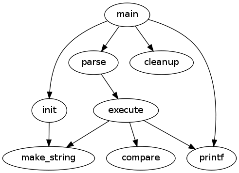
5.1.2 Example2 Fancy graph
($ () (let ((main (<> "main" :shape :box)) (make-string (<> "make a\\nstring"))) (& (:size "4,4") (->> main ("parse" :weight 8) ("init" :style :dotted) "cleanup") (-> "parse" "execute") (->> "execute" make-string "printf") (-> "init" make-string) (with-edge (:color :red) (-> main "printf" :style :bold :label "100 times") (-> "execute" (<> "compare" :shape :box :style :filled :color ".7 .3 1.0"))))))
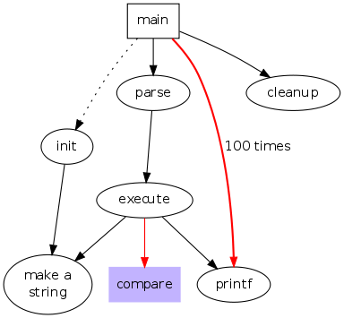
5.1.3 Example3 Graph with polygonal shapes
($ () (&& (--> (<> "a" :shape :polygon :side 5 :peripheries 3 :color :lightblue :style :filled) "b" (<> "hello world" :shape :polygon :sides 4 :skew .4)) (-> "b" (<> "d" :shape :invtriangle)) (<> "e" :shape :polygon :sides 4 :distortion .7)))

5.1.4 Example4 Records with nested fields
($ () (&& (->> ([] ":f0 left|:f1 mid\\ dle|:f2 right") ([] ":f0 one|:f1 two") ([] "hello\\nworld|{b|{c|:here d|e}|f}|g|h"))))
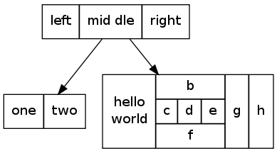
5.1.5 Example5 Constrained ranks
($() (& (:name "asde91" :ranksep .75 :size "7.5,7.5") (with-node (:shape :plaintext :fontsize 16) ;; the time-line graph (--> "past" 1978 1980 1982 1983 1985 1986 1987 1988 1989 1990 "future") ;; ancestor programs "Bourne sh" "make" "SCCS" "yacc" "cron" "Reiser cpp" "Cshell" "emacs" "build" "vi" "<curses>" "RCS" "C*") (~ "Software IS" "Configuration Mgt" "Architecture & Libraries" "Process") (with-node (:shape :box) (~ "past" "SCCS" "make" "Bourne sh" "yacc" "cron") (~ 1978 "Reiser cpp" "Cshell") (~ 1980 "build" "emacs" "vi") (~ 1982 "RCS" "<curses>" "IMX" "SYNED") (~ 1983 "ksh" "IFS" "TTU") (~ 1985 "nmake" "Peggy") (~ 1986 "C*" "ncpp" "ksh-i" "<curses-i>" "PG2") (~ 1987 "Ansi cpp" "nmake 2.0" "3D File System" "fdelta" "DAG" "CSAS") (~ 1988 "CIA" "SBCS" "ksh-88" "PEGASUS/PML" "PAX" "backtalk") (~ 1989 "CIA++" "APP" "SHIP" "DataShare" "ryacc" "Mosaic") (~ 1990 "libft" "CoShell" "DIA" "IFS-i" "kyacc" "sfio" "yeast" "ML-X" "DOT") (~ "future" "Adv. Software Technology") (-> "PEGASUS/PML" "ML-X") (->> "SCCS" "nmake" "3D File System" "RCS") (->> "make" "nmake" "build") (->> "Bourne sh" "Cshell" "ksh") (-> "Reiser cpp" "ncpp") (-> "Cshell" "ksh") (-> "build" "nmake 2.0") (-> "emacs" "ksh") (->> "vi" "ksh" "<curses>") (->> "IFS" "<curses-i>" "IFS-i" "sfio") (--> "<curses>" "<curses-i>" "fdelta") (->> "RCS" "SBCS" "fdelta") (->> "ksh" "nmake" "ksh-i" "ksh-88") (-> "ksh-i" "ksh-88") (->> "nmake" "ksh" "ncpp" "3D File System" "nmake 2.0") (-> "ncpp" "Ansi cpp") (-> "C*" "CSAS") (-> "fdelta" "SBCS") (-> "CSAS" "CIA") (->> "ksh-88" "sfio" "Configuration Mgt" "Architecture & Libraries") (-> "IFS-i" "Architecture & Libraries") (-> "SYNED" "Peggy") (->> "Peggy" "PEGASUS/PML" "ryacc") (-> "PEGASUS/PML" "Architecture & Libraries") (--> "yacc" "ryacc" "kyacc" "Architecture & Libraries") (-> "ML-X" "Architecture & Libraries") (-> "APP" "Software IS") (-> "SBCS" "Configuration Mgt") (->> "DAG" "Software IS" "DOT") (-> "CIA++" "Software IS") (==> "Ansi cpp" "nmake 2.0" "3D File System" "Configuration Mgt") (-> "CIA" "CIA++") (--> "IMX" "TTU" "PG2" "backtalk" "DataShare" "Architecture & Libraries") (-> "nmake 2.0" "CoShell") (==> "CIA" "APP" "DAG" "DIA") (--> "fdelta" "PAX" "SHIP" "Configuration Mgt") (==> "DIA" "DOT" "libft" "Software IS") (-> "sfio" "Architecture & Libraries") (->> "CoShell" "Configuration Mgt" "Architecture & Libraries") (-> "Mosaic" "Process") (--> "cron" "yeast" "Process") (==> "Software IS" "Configuration Mgt" "Architecture & Libraries" "Process" "Adv. Software Technology"))))
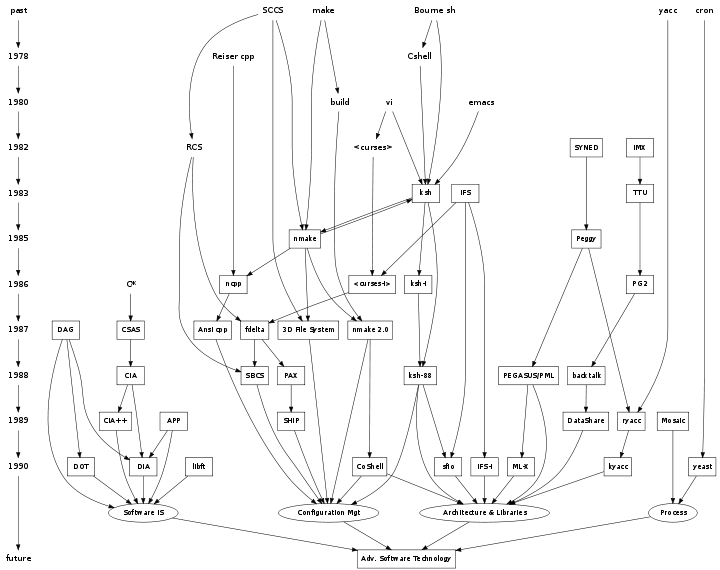
5.1.6 Example6 Binary search tree using records
($$ (&& (with-node (:height .1) (let ((n0 ([] ":f0 |:f1 G|:f2")) (n1 ([] ":f0 |:f1 E|:f2")) (n2 ([] ":f0 |:f1 B|:f2")) (n3 ([] ":f0 |:f1 F|:f2")) (n4 ([] ":f0 |:f1 R|:f2")) (n5 ([] ":f0 |:f1 H|:f2")) (n6 ([] ":f0 |:f1 Y|:f2")) (n7 ([] ":f0 |:f1 A|:f2")) (n8 ([] ":f0 |:f1 C|:f2"))) (&& (-> (@ n0 :f2) (@ n4 :f1)) (-> (@ n0 :f0) (@ n1 :f1)) (-> (@ n1 :f0) (@ n2 :f1)) (-> (@ n1 :f2) (@ n3 :f1)) (-> (@ n2 :f2) (@ n8 :f1)) (-> (@ n2 :f0) (@ n7 :f1)) (-> (@ n4 :f2) (@ n6 :f1)) (-> (@ n4 :f0) (@ n5 :f1)))))))
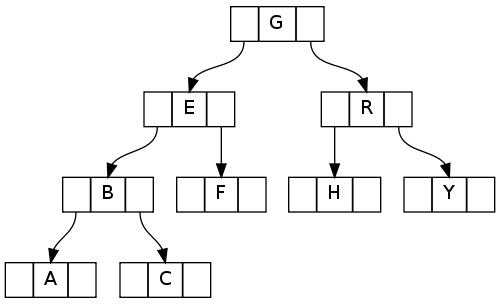
以下の様に関数bst-graphを定義することで任意の二分探索木をグラフとして出力することもできます。 関数bst-graphは、(parent left-child right-child)の形の二分探索木を再帰的に下り、グラフを生成します(cf. 2分木)。
(defun bst-graph (tree) (if (null tree) (&&) (labels ((rec (root-node tree) (let ((lc (second tree)) (rc (third tree))) (&& (when lc (if (atom lc) (-> (@ root-node :f0) (@ (bst-node lc) :f1)) (let ((lc-node (bst-node (first lc)))) (&& (-> (@ root-node :f0) (@ lc-node :f1)) (rec lc-node lc))))) (when rc (if (atom rc) (-> (@ root-node :f2) (@ (bst-node rc) :f1)) (let ((rc-node (bst-node (first rc)))) (&& (-> (@ root-node :f2) (@ rc-node :f1)) (rec rc-node rc))))))))) (if (null (cdr tree)) (bst-node (first tree)) (rec (bst-node (first tree)) tree))))) (defun bst-node (symb) ([] (format nil "~@{~A~}" ":f0 |:f1 " symb "|:f2"))) ($$ (with-node (:height .1) ;上と同様のグラフが出力される。 (bst-graph '(g (e (b a c) f) (r h y)))))
5.1.7 Example7 Records with nested fields (revisited)
($ () (let ((s1 ([] ":f0 left|:f1 mid\\ dle|:f2 right")) (s2 ([] ":f0 one|:f1 two")) (s3 ([] "hello\\nworld|{b|{c|:here d|e}|f}|g|h"))) (&& (-> (@ s1 :f1) (@ s2 :f0)) (-> (@ s1 :f2) (@ s3 :here)))))
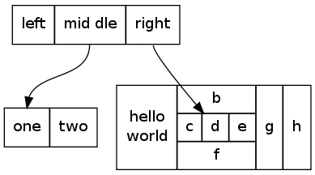
5.1.8 Example8 Hash table
($ () (& (:nodesep .05 :rankdir :LR) (with-node (:width 1.5 :height .1) (let ((n0 ([] ":f0 |:f1 |:f2 |:f3 |:f4 |:f5 |:f6 | " :height 2.5 :width .1)) (n1 ([] "{:n n14 | 719 |:p }")) (n2 ([] "{:n a1 | 805 |:p }")) (n3 ([] "{:n i9 | 718 |:p }")) (n4 ([] "{:n e5 | 989 |:p }")) (n5 ([] "{:n t20 | 959 |:p }")) (n6 ([] "{:n o15 | 794 |:p }")) (n7 ([] "{:n s19 | 659 |:p }"))) (&& (-> (@ n0 :f0) (@ n1 :n)) (-> (@ n0 :f1) (@ n2 :n)) (-> (@ n0 :f2) (@ n3 :n)) (-> (@ n0 :f5) (@ n4 :n)) (-> (@ n0 :f6) (@ n5 :n)) (-> (@ n2 :p) (@ n6 :n)) (-> (@ n4 :p) (@ n7 :n)))))))
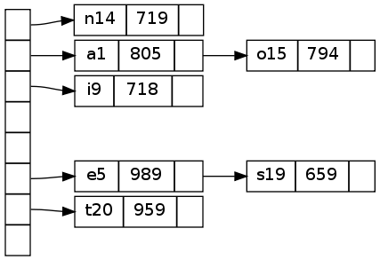
5.1.9 Example9 Clusters
($ () (&& ([&] (:label "process #1" :style :filled :color :lightgrey) (with-node (:style :filled :color :white) (--> "a0" "a1" "a2" "a3"))) ([&] (:label "process #2" :color :blue) (with-node (:style :filled) (--> "b0" "b1" "b2" "b3"))) (->> (<> "start" :shape :Mdiamond) "a0" "b0") (==> "a3" "b3" (<> "end" :shape :Msquare)) (-> "a1" "b3") (-> "a3" "a0") (-> "b2" "a3")))

5.1.10 Example10 Call graph with labeled
出力される画像がマニュアルのものと違いますが、グラフとしては同等です。 グラフを構成する要素(ノード、エッジ、グラフ)の順によって、グラフとしては同等でも、グラフ画像中のノード、エッジ、グラフの配置が異なる場合があります(これはGraphvizの仕様です)。
($ () (& (:size "8,6" :ratio :fill) (with-node (:fontsize 24) ([&] (:label "error.h") "interp_err") ([&] (:label "sfio.h") "sfprintf") ([&] (:label "ciafan.c") "ciafan" "computefan" "increment") ([&] (:label "util.c") "stringdup" "fatal" "debug") ([&] (:label "query.h") "ref" "def") ([&] () "get_sym_fields") ([&] (:label "stdio.h") "stdprintf" "stdsprintf") ([&] () "getopt") ([&] (:label "stdlib.h") "exit" "malloc" "free" "realloc") ([&] () "main") ([&] () "init_index") ([&] (:label "string.h") "strcpy" "strlen" "strcmp" "strcat") (->> "main" "strcpy" "strlen" "getopt" "init_index" "fatal" "ciafan" "interp_err" "malloc" "exit") (->> "debug" "strcat" "sfprintf") (->> "stringdup" "strcpy" "strlen" "malloc" "fatal") (->> "fatal" "sfprintf" "exit") (-> "increment" "strcmp") (->> "ciafan" "computefan" "def") (->> "computefan" "strlen" "strcmp" "get_sym_fields" "stdprintf" "realloc" "malloc" "fan") (->> "fan" "increment" "fatal" "ref" "strlen" "stdsprintf" "malloc" "exit" "free" "interp_err"))))
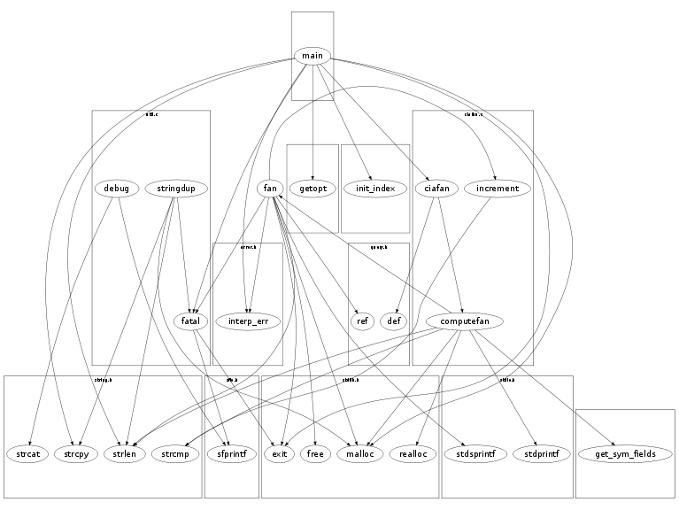
5.1.11 Example11 Graph with edges on clusters
($ () (& (:compound t) (let ((c0 ([&] () (->> "a" "b" "c") (==> "b" "c" "d"))) (c1 ([&] () (->> "e" "g" "f")))) (&& c0 c1 (-> "b" "f" :lhead c1) (->> "c" ("g" :ltail c0 :lhead c1) ("e" :ltail c0)) (->> "d" "e" "h")))))
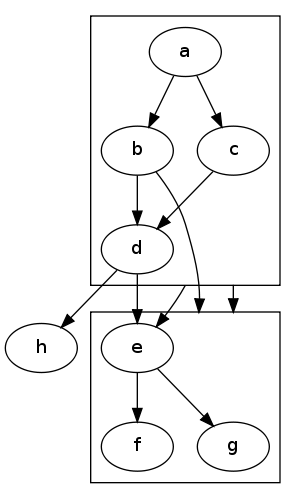
5.1.12 Example12 Html-like label
($$ (& (:name "html") (<> (html (table :border 0 :cellborder 1 :cellspacing 0 :cellpadding 4 (tr (td (font "hello" :color :red) (br) "world" :rowspan 3) (td "b" :colspan 3) (td "g" :rowspan 3 :bgcolor :lightgrey) (td "h" :rowspan 3)) (tr (td "c") (td "d" :port "here") (td "e")) (tr (td "f" :colspan 3)))) :shape :none :margin 0)))
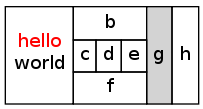
from http://www.graphviz.org/doc/info/html3.gv
($$ (&& (with-node (:shape :plaintext) (<> (html (table (tr (td "line 1") (td :bgcolor :blue (font :color :white "line 2")) (td :bgcolor :gray (font :point-size "24.0" "line 3")) (td :bgcolor :yellow (font :point-size "24.0" :face "ambrosia" "line 4")) (td (table :colorpadding 0 :border 0 :cellspacing 0 (tr (td (font :color :green "Mixed")) (td (font :color :red "fonts"))))))))))))
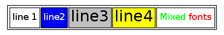
from http://www.graphviz.org/doc/info/html2.gv
($$ (& (:rankdir :LR) (with-node (:shape :plaintext) (let ((a (<> (html (table :border 0 :cellborder 1 :cellspacing 0 (tr (td :rowspan 3 :bgcolor :yellow "class")) (tr (td :port "here" :bgcolor :lightblue "qualfier")))))) (b (<> (html (table :bgcolor :bisque (tr (td :colspan 3 "elephant") (td :rowspan 2 :bgcolor :chartreuse :valign :bottom :align :right "two")) (tr (td :colspan 2 :rowspan 2 (table :bgcolor :grey (tr (td "corn")) (tr (td :bgcolor :yellow "c")) (tr (td "f")))) (td :bgcolor :white "penguin")) (tr (td :colspan 2 :border 4 :align :right :port "there" "4")))) :shape :ellipse :style :filled)) (c (<> (html "long line 1" (br) "line 2" (br :align :left) "line 3" (br :align :right)))) (d (<> "d" :shape :triangle))) (&& (~ b c) (-> (@ a :here) (@ b :there) :dir :both :arrowtail :diamond) (-> c b) (-> d c :label (html (table (tr (td :bgcolor :red :width 10) (td "Edge labels" (br) "also") (td :bgcolor :blue :width 10))))))))))
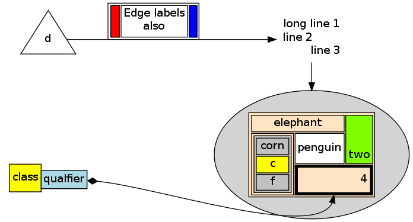
5.2 Examples from neato guide
5.2.1 Example13 Process States in an Operating System Kernel
($ () (& (:size "3,3") (O "run" "intr" "runbl") (-< "kernel" "run" "zombie" "sleep" "runmen") (--- "sleep" "swap" "runswap" "new") (-< "runmen" "runswap" "new" "sleep")))
上のコードをREPLで評価すると、ビューアが起動し、次のグラフ画像が出力されます。
シェルインターフェイス $ のプロパティリストが空のため、レイアウトアルゴリズムはデフォルトの:dotです。
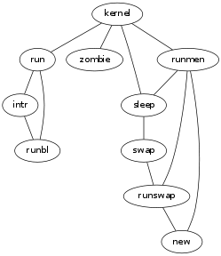
1: ($ (:layout :neato) 2: (& (:size "4,4") 3: (with-edge (:len 2) 4: (O "run" "intr" "runbl") 5: (-< "kernel" "run" "zombie" "sleep" "runmen") 6: (--- "sleep" "swap" "runswap" "new") 7: (-< "runmen" "runswap" "new" "sleep"))))
上のコードをREPLで評価すると、ビューアが起動し、下のグラフ画像が出力されます。
$ のプロパティリストでレイアウトアルゴリズムを:neatoに指定しているため、:dotと異なったレイアウトで画像が出力されます。
3行目のエッジ属性:lenはエッジの長さを指定する属性です。
:lenはレイアウトアルゴリズム:dotでは無効の属性です。
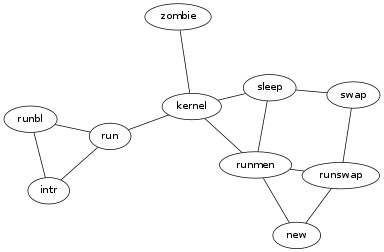
5.2.2 Example14 Example
($ (:layout :neato) (&& (O "n0" "n1" "n2" "n3")))

($ (:layout :circo) (&& (O "n0" "n1" "n2" "n3")))

5.2.3 Example15 Node and Edge Options
($ (:layout :neato) (& (:size "5,5") (with-node (:shape :box :style :filled) (with-node (:width .3 :height .3 :shape :octagon :style :filled :color :skyblue) "A1" "A2" "A3") (-< "A" ("A1" :label "l #6") ("A2" :label "l #7") ("A3" :label "l #8")) (with-edge (:style :invis :len 1.3) (--- "A1" "A2" "A3")) (with-edge (:len 3) (-< "A" ("B" :label "l #1") ("C" :label "l #2") ("D" :label "l #3") ("E" :label "l #4") ("F" :label "l #5")) (-< "B" ("C" :label "l #1") ("E" :label "l #2") ("F" :label "l #3")) (-- "C" "D" :label "l #1") (-- "D" "E" :label "l #1")))))
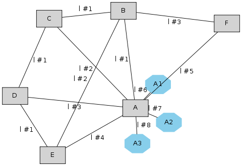
5.2.4 Example16
($ (:layout :neato) (&& (-- "n0" "n1" :len 2 :style :bold) (--- "n1" "n2" "n3" "n0")))
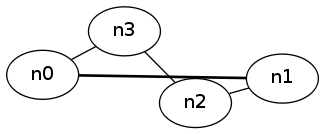
5.2.5 Example17
($ (:layout :neato) (&& (O (<> "n0" :pos "0,0!") (<> "n1" :pos "2,0!") (<> "n2" :pos "2,2!") "n3")))
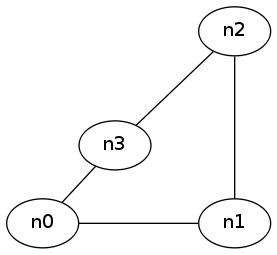
6 Reference Manual
Graphvizで使用できる属性は大方のものをサポートしている(URL属性類は未実装)。 レイアウトアルゴリズムごとにサポートしている属性が異なるので注意。
6.1 NODES
ノードコンストラクタ<>によって生成されるオブジェクトはnode型のオブジェクトである。 プレノード(数値、ストリング)、[]によって生成されるレコードもnodeのオブジェクト型とみなされる。 これら以外のものはnode型のオブジェクトではない。
ノード属性の種類については、下記のリンク先を参照せよ。
- 属性について： http://www.graphviz.org/content/attrs
- shape属性について： http://www.graphviz.org/node-shapes.html
- color属性について： http://www.graphviz.org/color-names.html
- <> label &rest node-attributes => node
[Function] ノードを生成する。
- [] label &rest node-attributes => record
[Function] レコードを生成する。
- @ node port-keyword1 &optional port-keyword2 => pre-node, or node
[Function]
- rank rank-keyward &rest nodes => NIL
[Function]
- ~ &rest nodes => NIL
[Function]
- with-node (&rest node-attributes) &body body => graph
[Macro] with-nodeは &, &&, [&]の引き数内で使うのが無難。
6.2 EDGES
エッジコンストラクタ->とエッジユーティリティ(—,<-,—>,-—,?,O)によって生成されるオブジェクトのみがedge型のオブジェクトである。
エッジ属性の種類については、下記のリンク先を参照せよ。
- 属性について： http://www.graphviz.org/content/attrs
- shape属性について： http://www.graphviz.org/arrow-shapes.html
- color属性について： http://www.graphviz.org/color-names.html
- -> node1 node2 &rest edge-attributes => edge
[Function]
- –– node1 node2 &rest edge-attributes => edge
[Function]
- ? node &rest edge-attributes => edge
[Function]
- <- node1 node2 &rest edge-attributes => edge
[Function]
- ––> &rest nodes => edge
[Function]
- ->> &rest nodes => edge
[Function]
- ==> &rest nodes => graph
[Function]
- -< &rest nodes => graph
[Function]
- ––– &rest nodes => edges
[Function]
- O &rest nodes => paths
[Function]
- with-edge (&rest edge-attributes) &body body => graph
[Macro] with-edgeは &, &&, [&]の引き数内で使うのが無難。
6.3 GRAPHES
グラフコンストラクタ& (or &&)によって生成されるオブジェクトはgraph型のオブジェクトである。 with-系のユーティリティの返り値、エッジユーティリティ(->>,==>,<==,-<,>-)の返り値、[&]によって生成されるクラスタもgraphのオブジェクト型とみなされる。 これら以外のものはgraph型のオブジェクトではない。
クラスター以外のグラフ属性値はトップレベルのもののみ有効。 クラスター以外のサブグラフのグラフ属性は無視される。 Graphvizがサポートする属性に加え、:name、:strictもグラフ属性として追加されている。 :name値はトップレベルグラフの名前で、ビューアのタイトルとして使用されることがある。 :strict値をtに設定すると、同一のノード組に張ることのできるエッジの数が1本に制限される（デフォルト値はnil）。
グラフ属性の種類については、下記のリンク先を参照せよ。
- 属性について： http://www.graphviz.org/content/attrs
- クラスターのcolor属性について： http://www.graphviz.org/color-names.html
- & (&rest graph-attributes) &body nodes-edges-graphs => graph
[Macro] グラフ属性リストとグラフ構成要素(ノード、エッジ、グラフ)からグラフを生成する。
- && &body nodes-edges-graphs => graph
[Function] グラフ属性リストがnilに指定されているグラフを生成する。
- [&] (&rest graph-attributes) &body nodes-edges-graphs => cluster
[Macro] グラフ属性リストとグラフ構成要素(ノード、エッジ、グラフ)からクラスターを生成する。
6.4 OUTPUT-TOOLS
- dot-output graph => NIL
[Function]
- dot-pprint graph => NIL
[Function]
- $ (&rest shell-proparties) graph => NIL
[Macro]
- $$ graph => NIL
[Macro] プロパティリストをnilに指定する以外、$と同様の動作を行う。
6.5 HTML-LIKE-LABELS
HTML-LIKEラベルは古いヴァージョンのGraphvizではサポートしていない可能性がある。 HTML-LIKEラベルはレコードに比べ、より詳細にノードの修飾を指定できる。 HTML-LIKEラベルはエッジやグラフのラベル属性値としても用いることができる(動作未確認)。 タグ関数(br, hr, vr, img, font, i, b, u, sub, sup, table, tr, td)によってのみtag型のオブジェクトは生成される。
参考： http://www.graphviz.org/node-shapes.html
- タグ関数 &rest attrs-tag-body => tag
[Function] タグ関数: br, hr, vr, img, font, i, b, u, sub, sup, table, tr, td. タグ関数は任意数の、タグ、タグボディ、タグ属性、タグ属性値を引数に取る。 引数の順は任意。 ただし、タグ属性の次には必ずタグ属性値を置かなければならない。
- html tag => html-like-labels
[Macro]
Footnotes:
1 DEFINITION NOT FOUND: fn:more-pparls
2 マクロcons-cell-ofを書く際に、 David S. Touretzkyによる素晴らしいLisp入門書、 Common Lisp: A Gentle Introduction to Symbolic ComputationのAppendix AのSDRAWのコードが大変参考になりました。 SDRAWは、ループ構造も含む任意のリストを引数に取り、そのコンスセル構造を標準出力にディスプレイするライブラリです。 ただし、ここで紹介したマクロcons-cell-ofは、コードが複雑になってしまうため、ループ構造のリストには対応していません。